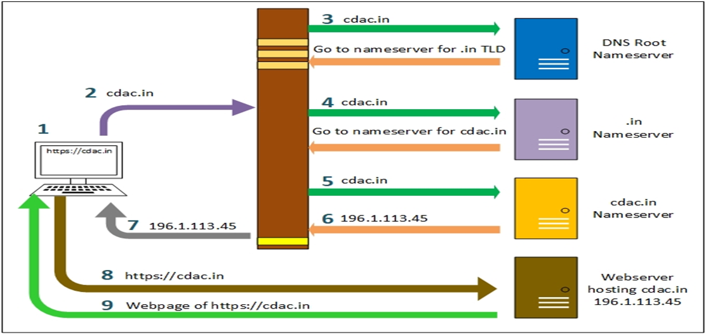
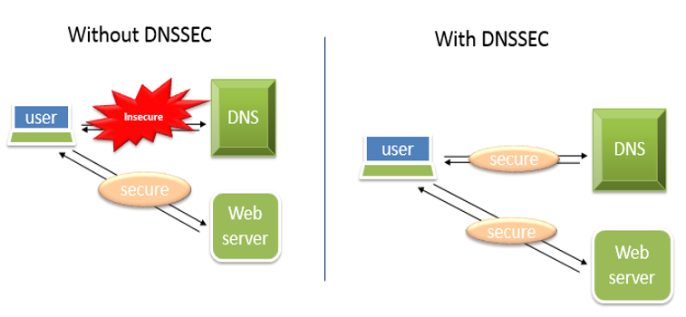

An application on the Internet that translates domain names to IP
addresses and vice-versa. In simple words, The Domain Name System
(DNS) is a directory lookup service that provides a mapping
between the name of a host on the Internet and its numerical
internet address. DNS is comprised of 4 elements:
The DNS database is a collection of resource record organized
into a distributed database. It contains the information like IP
address, name servers for this domain name.
Name Servers are server programs that hold information about a
portion of the domain-name tree structure and the associated
RRs.
Resolvers are programs that extract information from name
servers in response to client request. A typical client request
is for an IP address corresponding to a given domain name.
Domain Name System Security Extensions (DNSSEC):
It is used by several protocols that provide e-mail security. It
provides end-to-end protection through the use of digital
signature. DNSSEC protects DNS clients from accepting forged DNS
RRs. It protects these clients by using Digital Signatures to
provide:
Data origin authentication to ensure that a RR has originated
from the content of a RR has not been modified.
Data Integrity verification to ensure that the content of a RR
has not been modified.
Root Zone File is published by 13 root servers named A to M,
operated by various operators;
13 because of logical limitations – max packet size in UDP in 512
bytes;
Replicated; 374 instances of same are available
Each root server is a copy and none of them are special than
others; so the number 13 is only notional
India has replicas of 3 root servers; I root at Mumbai, K root at
Delhi, and F root at Chennai
Root name server uses this file (200 KB) to respond to queries,
Contains names and IP addresses of authoritative DNS servers for
all TLDs, ccTLD. Any changes to root zone file is requested by
ICANN and then approved by Department of Commerce. US Department
of Commerce has full authority; while ICANN is the root zone
operator and Verisign is the root zone maintainer. ICANN is
a public-benefit non-profit organization responsible for
coordination of the Internet’s Global Domain Name System.
Fast Flux is a DNS technique used by botnets to hide various types
of malicious activities (such as phishing, web proxying, malware delivery,
and malware communication) behind an ever-changing network of compromised
hosts acting as proxies. Fast Flux network is mostly used to make
communication between malware and its command and control server.
DNS Pharming / Cache Poisoning
In DNS pharming attacker hacks into the DNS server and changes the
IP address for www.xyz.com to IP of www.xyz1.com (Fake page).
So if the user enters the URL in address bar, the computer queries
the DNS server for the IP address of www.xyz.com. Since the DNS server
has already been poisoned by the attacker, it returns the IP address of www.xyz1.com (fake page).

Overcome the attacks on DNS using DNSSEC
DNSSEC uses Public Key Cryptography and digital signatures to provide:
Data Origin Authentication-Did the DNS reply really come from the .com zone?
Data Integrity-Did an attacker modify the data in the response, since it was signed?
So, it provides protection against (corruption) spoofing of DNS Data.